① 내 휴대폰에 알림장 바로가기 만들기
아래 학생용 주소를 눌러 열어요.
eaglemath7.github.io/eaglemath-app/student/그다음 휴대폰 홈 화면에 바로가기를 만들어 두면, 앱처럼 한 번에 열 수 있어요. 방법은 아래 바로가기 만드는 법을 보세요.
② 로그인하기
- 아이디
- 내 이름 (예: 한독수)
- 비밀번호
- 학원에서 알려준 비밀번호
같은 이름의 친구가 있으면 아이디 뒤에 숫자가 붙어요. 이 경우와 비밀번호를 잊어버렸을 때는 선생님께 물어보세요.
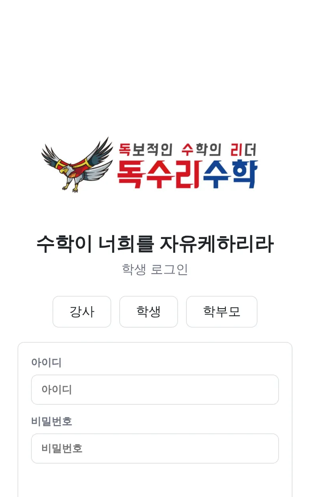
③ 학원에서 내가 할 일
홈에서 “해야 할 과제” 확인
선생님이 내준 숙제와 마감이 보여요. 모르는 게 있으면 선생님께 질문을 눌러요.
수업이 끝나면 “수업 기록” 쓰기
홈 아래쪽 작성하기를 누르고 세 칸을 채워요.
① 오늘 공부한 내용 ② 다음 수업까지 할 숙제 ③ 오늘의 생각
선생님께 보내기
다 썼으면 선생님께 보내기를 눌러요. 선생님이 확인하면 하원할 수 있어요. 아직 덜 썼다면 임시저장을 눌러요.
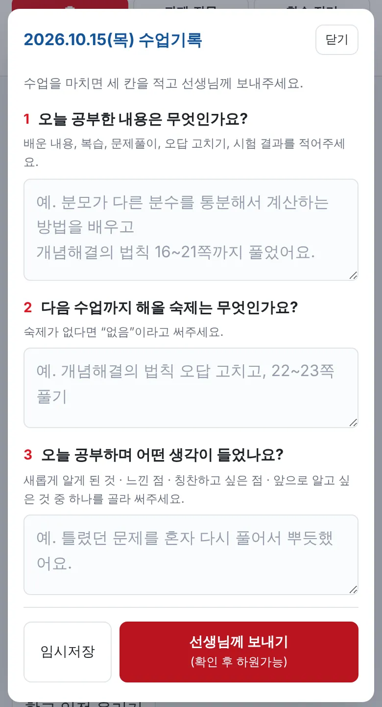
선생님이 내 기록을 확인해서 알림장으로 보내면 “선생님 확인 완료”로 바뀌고, 그 뒤에는 고칠 수 없어요. 그 전에는 이어서 쓰기로 고칠 수 있어요.
④ 홈 화면 둘러보기
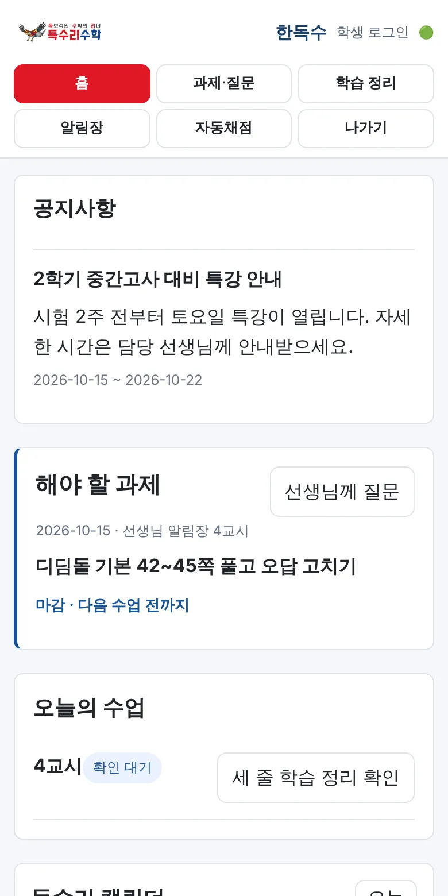
- 공지사항 — 학원에서 알려 주는 소식이에요.
- 해야 할 과제 — 숙제와 마감, 선생님의 피드백이 보여요.
- 독수리 캘린더 — 학원 일정·공휴일·휴원일과 내 수업 기록을 날짜별로 봐요. 날짜를 누르면 그날 기록이 아래에 나와요.
- 학교 일정 올리기 — 시험·행사 같은 학교 일정을 선생님께 알려 줘요.
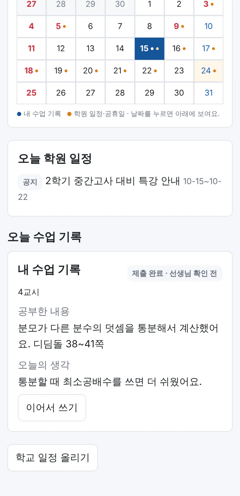
⑤ 과제·질문
- 질문·문의 작성 — 모르는 문제를 선생님께 물어보고, 답변도 여기서 봐요.
- 과제 제출함 — 선생님이 사진 제출을 요청한 과제는 사진을 찍어 사진 제출을 눌러요.
⑥ 자동채점 시범 운영
문제집 페이지를 사진으로 찍어 올리면 문제마다 O / X로 채점해 줘요. 지금은 독수리유형 초등수학 3-2만 채점할 수 있어요.
위쪽 메뉴에서 자동채점을 누르고 교재를 골라요.
카메라로 찍기 또는 앨범에서 여러 장 고르기로 사진을 넣어요. 한 번에 20장까지 돼요.
채점하기를 누르면 결과가 나와요.
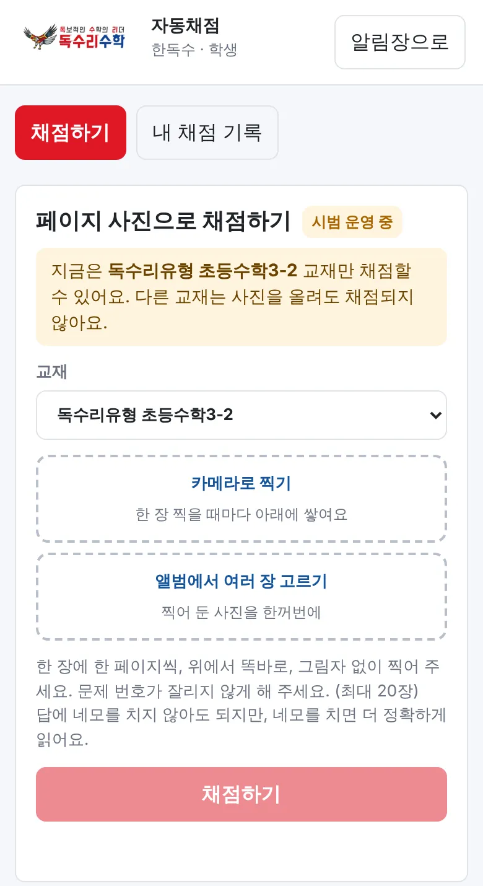
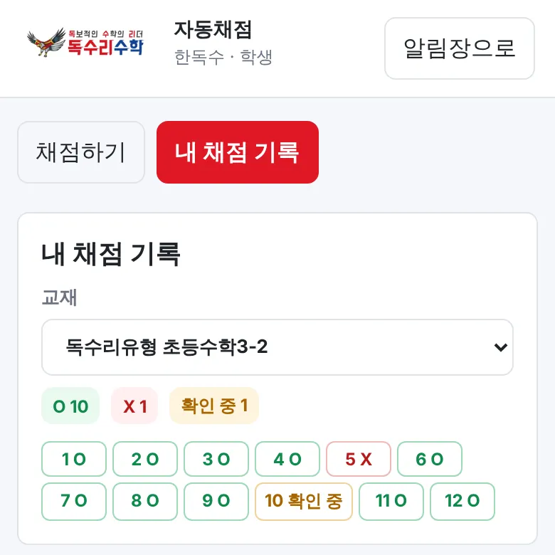
X 문제는 다시 풀고 다시 찍으면 가장 최근 사진으로 다시 채점돼요. “확인 중”은 선생님이 직접 확인해 주는 문제예요. 정답은 보이지 않아요.
① 휴대폰에 알림장 바로가기 만들기
아래 학부모용 주소를 눌러 열어 주세요.
eaglemath7.github.io/eaglemath-app/parent/홈 화면에 바로가기를 만들어 두시면 앱처럼 편하게 여실 수 있어요. 방법은 아래 바로가기 만드는 법을 보세요.
② 로그인하기
- 아이디
- 자녀의 아이디 (보통 자녀 이름)
- 비밀번호
- 학원에 등록된 어머님 휴대폰 번호에서 010을 뺀 8자리
예) 010-1234-5678 이면 비밀번호는 12345678
형제·자매가 함께 다니면 어느 자녀 아이디로 들어오셔도 같은 계정이에요. 화면 위쪽 자녀 이름 버튼을 눌러 아이별로 바꿔 보실 수 있어요.
로그인이 안 되시면 학원으로 연락 주세요. 등록된 번호가 다르거나, 계정 연결이 아직 안 된 경우일 수 있어요.
③ 학부모님이 하실 수 있는 일
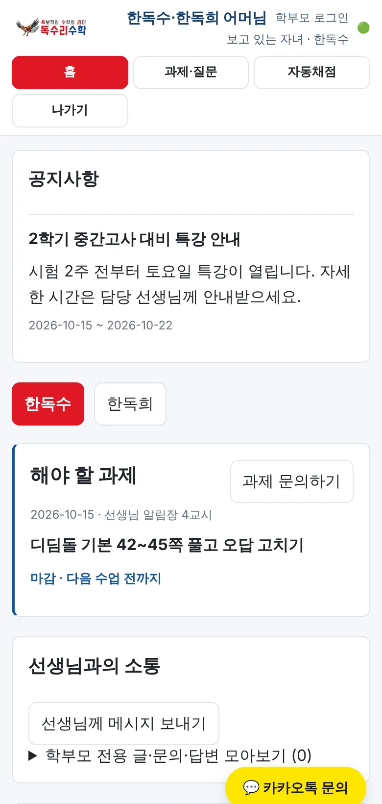
- 공지사항 — 학원 안내를 확인하세요.
- 해야 할 과제 — 자녀의 숙제와 마감을 보시고, 궁금하시면 과제 문의하기를 눌러 주세요.
- 선생님과의 소통 — 선생님께 메시지 보내기로 문의를 남기시고, 주고받은 내용은 “모아보기”에서 다시 보실 수 있어요.
- 학습 달력 — 날짜를 누르면 그날의 수업 알림장(교재·단원, 배운 내용, 과제)이 보여요.
- 학부모 코멘트 — 알림장 아래에 아이의 근황이나 궁금한 점을 남겨 주세요.
- 카카오톡 문의 — 오른쪽 아래 노란 버튼을 누르면 학원 카카오톡 채널로 연결돼요.
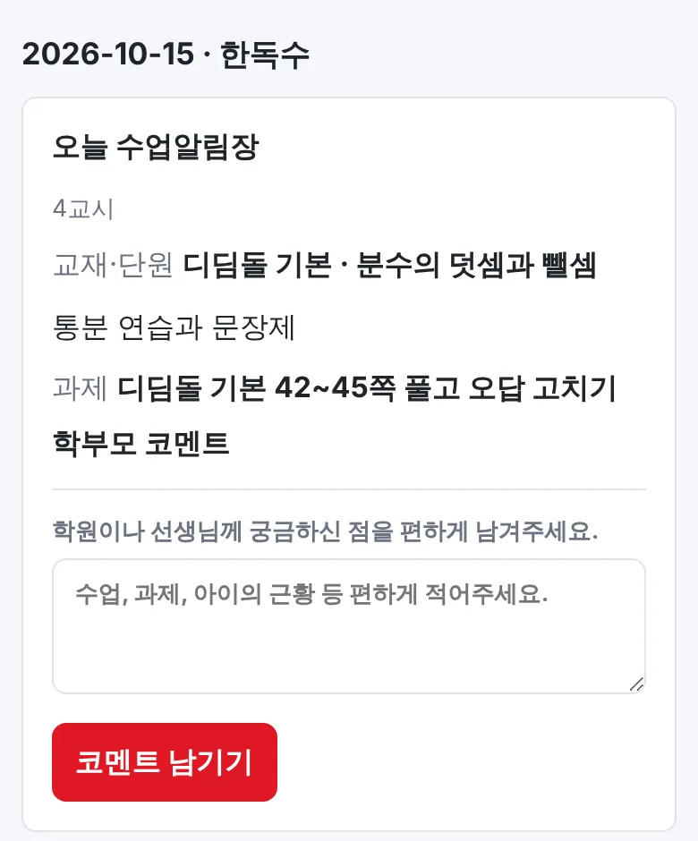
수업 알림장은 아이가 쓴 수업 기록을 선생님이 확인·정리해서 보내 드리는 것이에요. 선생님이 보내기 전에는 보이지 않아요.
④ 집에서 채점해 주기 시범 운영
저학년 자녀는 부모님이 대신 사진을 찍어 채점하실 수 있어요. 지금은 독수리유형 초등수학 3-2만 채점돼요.
위쪽 메뉴의 자동채점을 누르세요.
교재와 자녀를 고르세요. (자녀가 한 명이면 자동으로 선택돼요)
페이지 사진을 찍거나 앨범에서 여러 장 골라 채점하기를 누르세요.
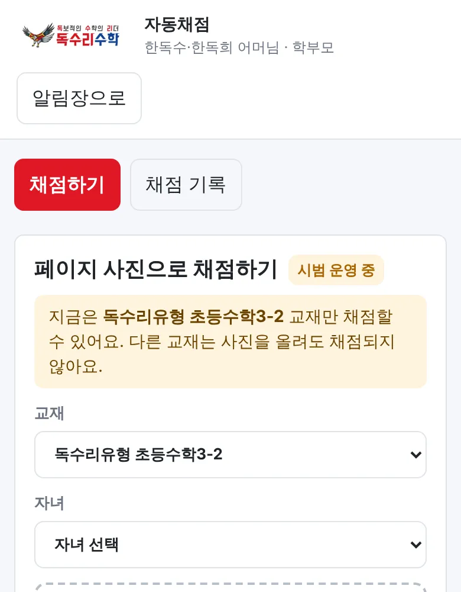
결과는 문항별 O / X로만 보여요. 애매한 답은 “확인 중”으로 표시되고 선생님이 확인해요. 결과는 채점 기록 탭에서 다시 보실 수 있어요.
① 접속과 로그인
- 아이디
- 원장님이 만들어 드린 강사 아이디
- 비밀번호
- 원장님께 안내받은 비밀번호
휴대폰에서는 모바일 화면으로 열려요. 컴퓨터에서 넓게 보고 싶으면 오른쪽 위 PC 버전을 누르세요. 끝나면 나가기로 로그아웃해요.
강사용 주소도 아래 바로가기 만드는 법대로 홈 화면에 추가해 두면 편해요.
② 메뉴 한눈에 보기
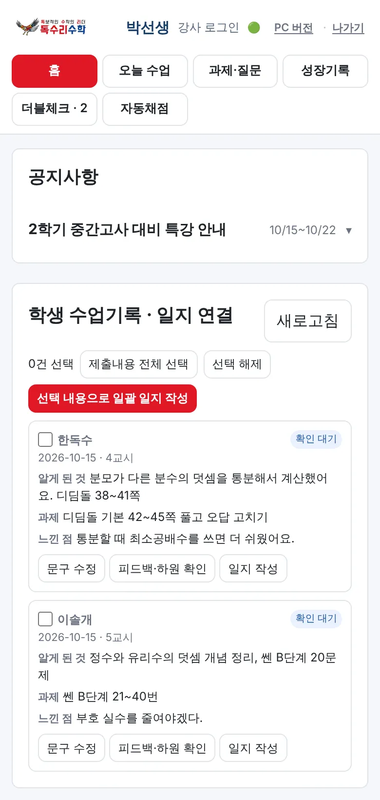
- 홈 — 공지(제목을 누르면 펼쳐짐), 학생 수업기록 · 일지 연결, 내 할 일, 일정과 마감일 달력.
- 오늘 수업 — 교시별 학생 목록. 학생을 골라 공통 수업·알림장 작성, 과제 출제, 단원평가 기록을 해요.
- 과제·질문 — 학생·학부모 질문에 답변하고, 제출된 과제를 검사 완료 또는 보완 요청해요.
- 성장기록 — 단원평가 점수와 교재·진도를 기록해요.
- 더블체크 — 학생·학부모와 주고받은 소통을 담임과 관리자가 함께 확인해요. 숫자는 아직 확인하지 않은 건수예요.
- 자동채점 — 학생 대신 사진을 올려 채점하고, 결과표와 확인 대기 문항을 봐요.
③ 수업 후 알림장 보내기 (가장 중요)
학생이 수업 기록을 보내요
홈과 오늘 수업의 학생 수업기록 · 일지 연결에 “확인 대기”로 올라와요.
확인하고 하원 처리
문구 수정으로 표현을 다듬고, 피드백·하원 확인으로 학생에게 한마디를 남겨요.
일지 작성 → 게시
일지 작성을 누르면 학생 기록이 채워진 알림장 양식이 열려요. 출석·과제수행도·수업집중도를 고르고 “학부모님께” 문구를 쓴 뒤 게시하기를 눌러요. AI 문장 다듬기로 문장을 정리할 수 있어요.
여러 학생을 한 번에
같은 진도의 학생은 체크한 뒤 선택 내용으로 일괄 일지 작성을 누르세요.
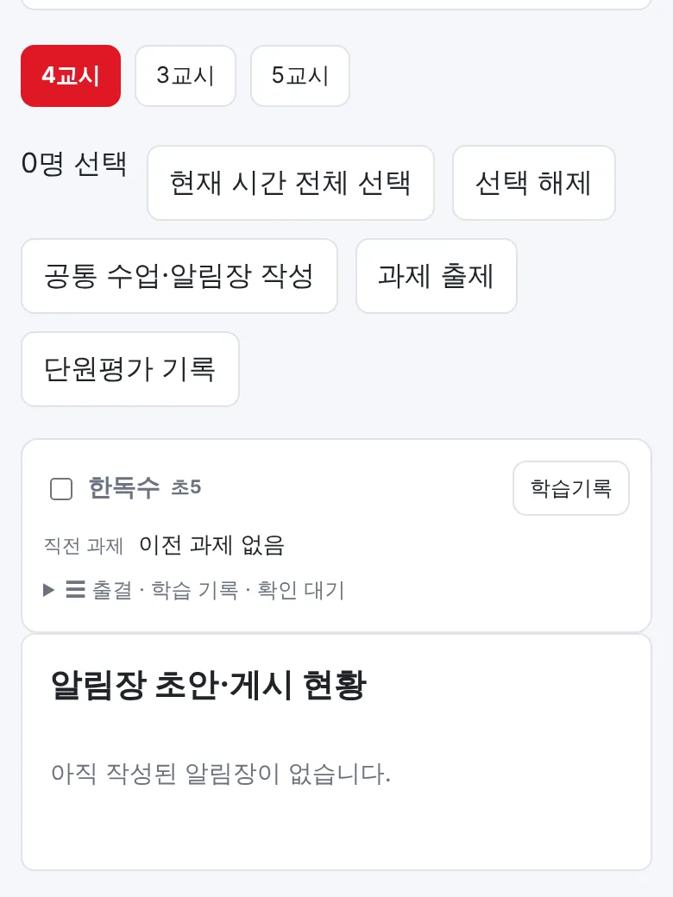
게시한 알림장은 학부모님 화면에 바로 보이고, 그 뒤에는 학생이 자기 기록을 고칠 수 없어요. 게시 전에는 초안 저장만 해 둘 수 있어요.
④ 자동채점 관리
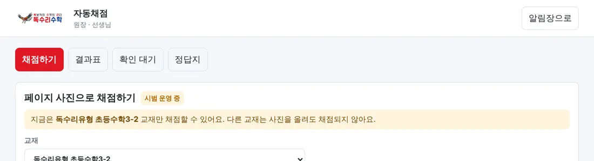
- 결과표 — 학생 × 문항 O/X 표. 칸을 누르면 학생이 쓴 답 사진을 보고 O/X를 고칠 수 있어요.
- 확인 대기 — AI가 확실하지 않아 보류한 문항이에요. 사진을 보고 O 또는 X로 확정해 주세요.
- 정답지 — 원장·부원장만 교재 정답지를 올릴 수 있어요.
⑤ 원장·부원장 전용
- 공지 쓰기 — 학생용/학부모용, 초·중·고, 학교·학년별, 특정 학생에게만 보낼 수 있어요.
- 학생정보 — 검색창 하나로 이름·학년·학교·요일·시간·담당 선생님·전화번호를 함께 찾아요. (예: “중2 배곧중”)
- 가족 연결 · 앱 초대 — 학부모 계정 만들기와 자녀 연결, 초대문 복사.
- 보충 등록 · 할 일 배정 — 보충 일정을 등록하고 직원별 업무를 나눠요.
📲 홈 화면에 바로가기 만드는 법
카카오톡에서 링크를 눌렀다면 먼저! 카카오톡 안에서는 바로가기를 만들 수 없어요. 화면 구석의 메뉴(⋮ 또는 ⋯)를 눌러 “다른 브라우저로 열기”(아이폰은 “Safari로 열기”)를 고른 뒤 아래 순서대로 해 주세요.
🍎 아이폰 (Safari)
- Safari로 주소를 열어요.
- 아래쪽 ⬆︎ 공유 버튼을 눌러요.
- 목록을 내려 “홈 화면에 추가”를 눌러요.
- 오른쪽 위 “추가”를 누르면 끝!
🤖 안드로이드 (Chrome)
- Chrome으로 주소를 열어요.
- 오른쪽 위 ⋮ 메뉴를 눌러요.
- “홈 화면에 추가” 또는 “앱 설치”를 눌러요.
- “추가/설치”를 누르면 끝!
삼성 인터넷: 아래 ≡ 메뉴 → 현재 페이지 추가 → 홈 화면
다음부터는 아이콘만 누르면 바로 열려요.
휴대폰 기종과 버전에 따라 메뉴 이름이 조금 다를 수 있어요. 찾기 어려우시면 학원에 말씀해 주세요.